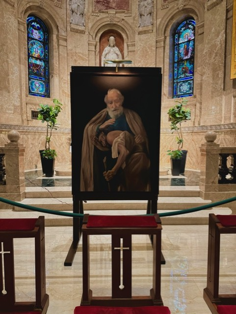
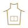
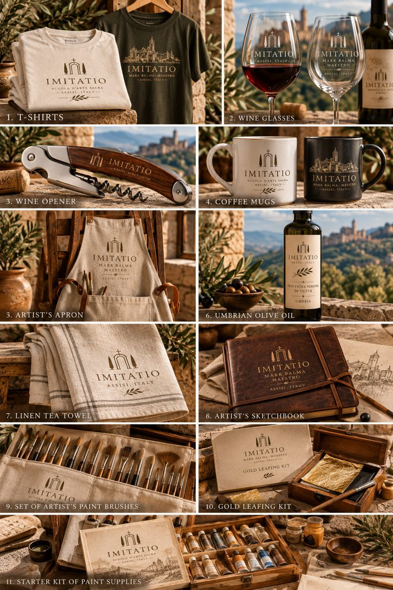

La maglietta
T-shirts
A cotton T-shirt bearing the Imitatio mark.
From the bottega in the foothills of Assisi: prints of the maestro’s paintings and the tools, paints and materials of the workshop. Prossimamente, coming 2027.
Coming 2027

Fine prints of works by Mark Balma.
Tools of the bottega.
Paints and pigments.

Il grembiuleA studio apron bearing the Imitatio mark.
A studio easel.
A first set of materials for drawing and painting.
A kit for gilding.
La collezione
Objects for the table and the studio, bearing the Imitatio mark.

La maglietta
A cotton T-shirt bearing the Imitatio mark.
La tazza
A mug for the morning coffee, with the Imitatio mark.
I bicchieri
Stemmed glasses for the table, etched with the Imitatio mark.
Il cavatappi
A waiter’s corkscrew bearing the Imitatio mark.
Lo strofinaccio
A linen tea towel for the kitchen, with the Imitatio mark.
Il taccuino
A sketchbook for drawing, with the Imitatio mark.
L’olio
Olive oil from Umbria, in an Imitatio bottle.
Concept · final products to come
Prices to be announced · Opening 2027
Grazie. Pace e Bene from Assisi.